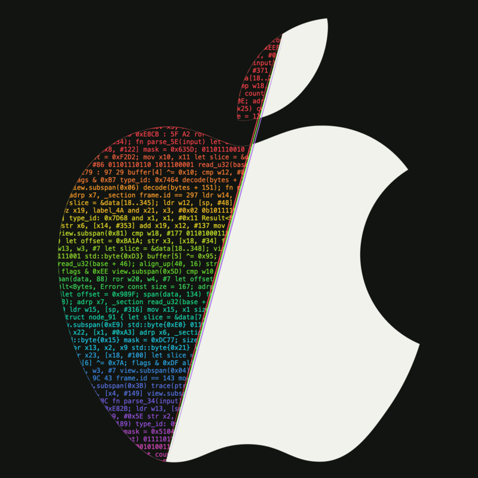

Op het apparaat
Gegevens & privacy
Hoe goed beschermt je app de gegevens op het apparaat?
- Lokale opslag en logbestanden
- Keychain en toegangsrechten
- Onnodige blootstelling van gegevens
Onafhankelijke iOS-pentests
We onderzoeken iOS-apps binnen een afgesproken scope en leveren heldere bevindingen met praktische aanbevelingen.

Onze dienstverlening
Een gericht onderzoek naar je app, de gegevens die deze verwerkt en het gedrag ervan.
Op het apparaat
Hoe goed beschermt je app de gegevens op het apparaat?
Binnen de app
Een grondige blik op de gecompileerde app en de logica die daaruit te achterhalen is.
Tussen app en dienst
Hoe je app communiceert met de diensten waarvan deze afhankelijk is.
TestomgevingJe reguliere app en de bijbehorende endpoints, of een test- of stagingomgeving waarvoor toestemming is gegeven.
We spreken de scope en toegang af voordat het onderzoek begint.
Buiten de scopeBroncodereview, infrastructuurtests en phishing. Met reverse engineering onderzoeken we de logica die te achterhalen is; herstel van de oorspronkelijke broncode is niet gegarandeerd.
Onze aanpak
Drie stappen, met één vast aanspreekpunt.
We beginnen bij je beveiligingsvragen. Daarna spreken we af welke app, omgeving, toestemmingen en onderdelen binnen het onderzoek vallen.
We onderzoeken de gecompileerde app en het gedrag ervan. API-tests blijven binnen de expliciet afgesproken scope.
Je ontvangt een uitgebreid rapport met bewijs, de impact van de bevindingen en praktische aanbevelingen.
Een release of ingrijpende wijziging op de planning?
Plan vóór de lancering voldoende tijd in om de app te onderzoeken en de bevindingen op te pakken.
Wat je ontvangt
Gedetailleerd genoeg voor ontwikkelaars. Duidelijk genoeg om beslissingen te ondersteunen.
Voordat we beginnen
Een paar antwoorden die je helpen het onderzoek voor te bereiden.
We onderzoeken de gecompileerde iOS-app en gebruiken reverse engineering om inzicht te krijgen in de logica die te achterhalen is. Dit is geen broncodereview en biedt geen garantie dat de oorspronkelijke broncode kan worden hersteld.
Ja, met toestemming. We gaan uit van je reguliere app en de gebruikelijke endpoints, of een afgesproken test- of stagingomgeving. Aanvullende API-tests vereisen expliciete toestemming en een eigen afgesproken scope.
Een korte beschrijving van je app, wat je wilt laten onderzoeken en eventuele deadlines. Daarna spreken we de scope, toestemmingen, toegang tot de app en benodigde testaccounts af.
Neem contact op
Vertel ons wat je app doet, wat je wilt laten onderzoeken en of er al een releasedatum gepland staat.
info@ivaltrix.nl